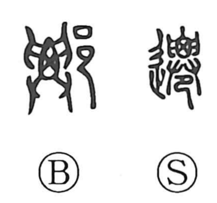

遷

Kun: utsuru, utsusu, kawaru | On: sen
to move ・ to transfer ・ to change
Explanation
Shirakawa reads 遷 as a phono-semantic character. In early forms, the inner element shows a corpse being lifted away—head and seated lower body grasped with both hands—evoking the ancient practice of secondary burial: the dead were first set in a board-walled charnel house to weather, then later carried out for reburial, a custom known in western regions of ancient China. The 辵 element adds the sense of going or conveying. From the image of transporting the body to the board house, the character broadened to mean to remove, transfer, move, and by extension to change. Its on-reading sen is indicated by the phonetic element, familiar as well from the word for a Daoist recluse, 僊/仙 (sennin).